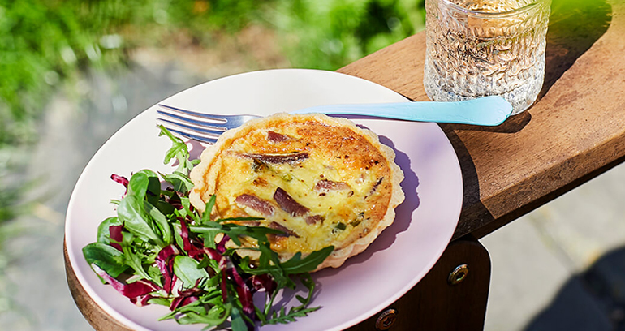

Quiche Lorraine is a savory French tart featuring a buttery pastry crust filled with a rich mixture of eggs, cream, bacon, and Gruyère cheese. Originating from the Lorraine region of France, this elegant dish is perfect as an appetizer, brunch item, or light lunch when paired with a simple green salad.
Ingredients
- 1 pre-made pie crust (or homemade pastry)
- 8 slices bacon, diced
- 1 medium onion, finely chopped
- 4 large eggs
- 1 1/2 cups heavy cream
- 1/4 teaspoon salt
- 1/4 teaspoon white pepper
- Pinch of nutmeg
- 1 1/2 cups Gruyère cheese, grated
- 1 tablespoon fresh chives, chopped (for garnish)
Preparation
This classic French quiche combines a flaky pastry crust with a silky custard filling studded with crispy bacon and cheese. The key to a perfect quiche is a properly blind-baked crust and a gently cooked filling that remains creamy and tender.
Chef's Tips
- For the best texture, don't overcook the quiche - it should be just set but still slightly wobbly in the center.
- Let the quiche rest for 10-15 minutes before slicing for cleaner cuts.
- Traditional Quiche Lorraine doesn't contain cheese, but modern versions often include Gruyère or Swiss cheese.
- Serve warm or at room temperature for the best flavor.